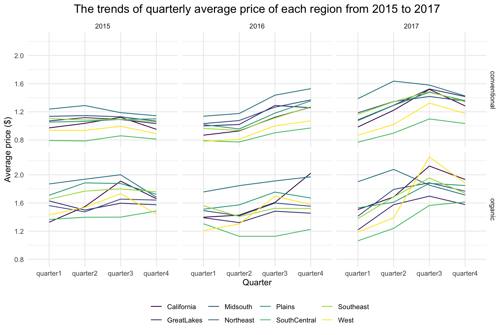
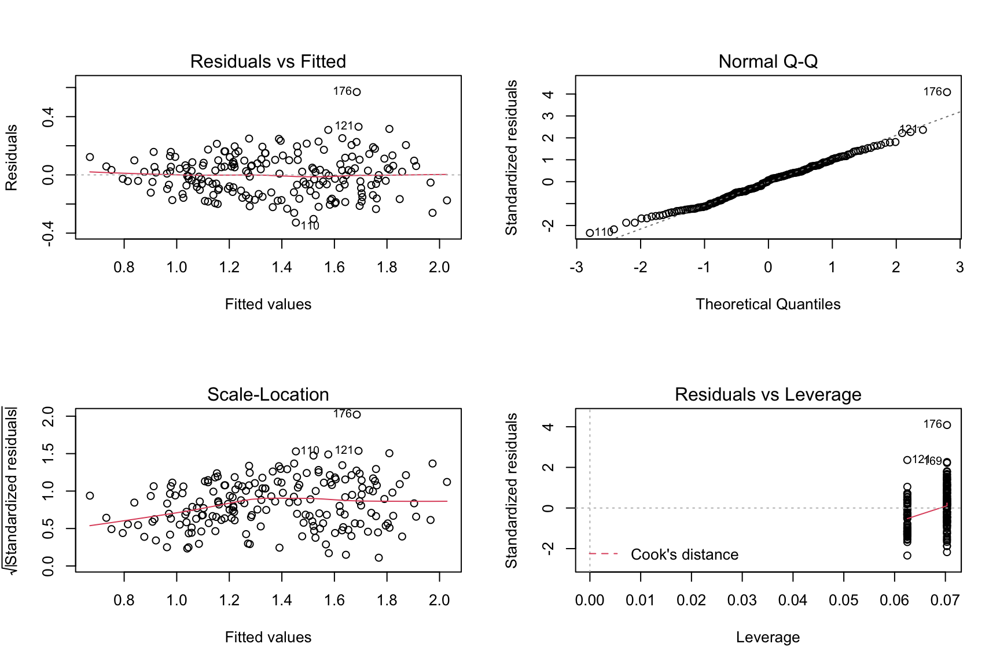

The main dataset of our project is from kaggle and Hass. This dataset shows the weekly retail volume and average price of Hass avocado, ranging from 2015 to 2018. However, since there is only 11-week data in 2018, we decide to remain the dataset between 2015 and 2017.
For regression analysis, we are interested in the association between the price of avocado and several predictors. Hence, the outcome is
and the predictors considered include:
reg_df %>%
ggplot(aes(x= quarter, y = quarterly_average_price, group = region, color = region)) +
geom_line() +
facet_grid(type~year) +
ggtitle("The trends of quarterly average price of each region from 2015 to 2017") +
labs(x = "Quarter", y = "Average price ($)") Based on the trends plot, we find that the average price of a avocado is different by type, quarter, year, and region. Hence, it is reasonable to consider these four variables as predictors in modeling.
The model we intend to fit is:
\[ quarterly \space average \space price = \beta_0 + \beta_1type + \beta_2year + \beta_3quarter + \beta_4 region \]
# regression 1 analysis
reg1 = lm(quarterly_average_price~type + year + quarter + region, data = reg_df)
reg1 %>%
broom::tidy() %>%
select(term, estimate, p.value) %>%
mutate(term = str_replace(term, "^type", "Type:"),
term = str_replace(term, "^quarter", "Quarter: "),
term = str_replace(term, "^region", "Region:")) %>%
knitr::kable()| term | estimate | p.value |
|---|---|---|
| (Intercept) | -124.9400853 | 0.0000026 |
| Type:organic | 0.4831364 | 0.0000000 |
| year | 0.0624828 | 0.0000022 |
| Quarter: quarter2 | 0.0820032 | 0.0059938 |
| Quarter: quarter3 | 0.2381571 | 0.0000000 |
| Quarter: quarter4 | 0.1833036 | 0.0000000 |
| Region:GreatLakes | -0.0505655 | 0.2268371 |
| Region:Midsouth | 0.0146154 | 0.7263595 |
| Region:Northeast | 0.2192285 | 0.0000004 |
| Region:Plains | 0.0486241 | 0.2451037 |
| Region:SouthCentral | -0.2931731 | 0.0000000 |
| Region:Southeast | 0.0116896 | 0.7795317 |
| Region:West | -0.1240774 | 0.0033267 |
Based on the results of the multiple linear regression, the effect of organic type is significant with refenrence on conventional type due to a negligible p-value. And the orgnic type has a relatively large positive estimate value, indicating changes in the organic type variable are associated with positive changes in the response of quarterly average price at the population level.
Since the average price of avocado is inceasing with increased year based on the previous trend plot, we consider the year as a continuous varibale. And the effect of year is significant with a p-value smaller than 0.05.
The effect of quarter is also significant with p-value below 0.05 based on the reference on quarter 1,and there are increasing estimates from quarter 2 to quarter 4.
With reference on California, the effect of region is only significant for Northeast, South Central, and West. Northeast has a higher positive estimate, indicating a significantly greater influence on quarterly average price by Northeast. The estimates of South Central and West are negative, indicating a significantly negative influence on the outcome by these two regions. For the other four regions including Great Lakes, Midsouth, Plains, and Southest, their p-value is above 0.05, indicating their average prices of a quarter are not significantly different from that of california. It is also confirmed from the previous plot that the trends of these four regions are close to that of california.
The F test statistics of the model is 18.62264 with a p-value below 0.05, indicating the model is significant. The R2 of 0.8193877 is fairly good, accounting for 82% of variation in the response that is explained by the model.
To check whether our model meets the assumptions of the analysis, regression diagnostic plots are created:
par(mfrow=c(2,2))
plot(reg1) In the Residuals vs Fitted plot, the red line showing the average value of the residuals at each value of fitted value is pretty flat, and points appear to be randomly spread out about the line, indicating no discerninle non-linear trends or changes in variability. The normal QQ plot is also good where the residuals match to the diagonal line, indicating these residuals look to be normally distributed. In the leverage plot, there is no evidence of outliers due to the abscence of Cook’ distance dashed line. Generally, the assumptions are all satisfied and our model is valid.
We want to add GDP as another predictor in our model and compare with the previous model. Our new model is: \[ quarterly \space average \space price = \beta_0 + \beta_1type + \beta_2year + \beta_3quarter + \beta_4 region +\beta_5 gdp\]